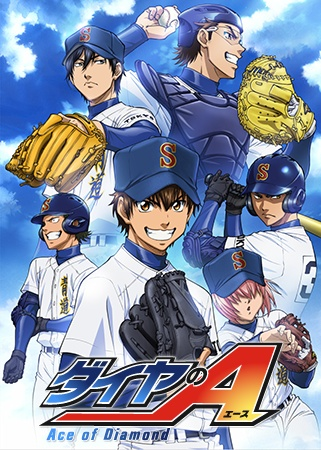
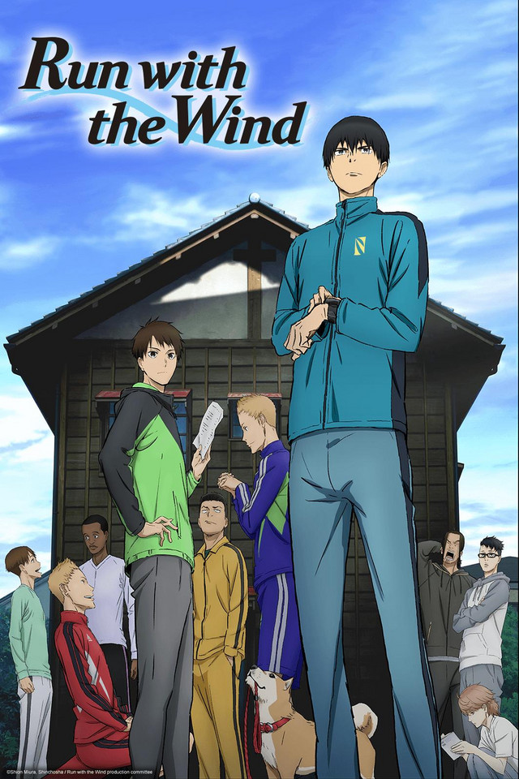

"Haikyuu!!" is a Japanese anime and manga series centered around Shoyo
Hinata, a determined and short-statured volleyball enthusiast. Despite
facing initial setbacks, Hinata joins his high school volleyball team,
where he forms a dynamic partnership with the talented setter Tobio
Kageyama. Together with their teammates, they aim to overcome
challenges, improve their skills, and compete at the national level.
"Haikyuu!!" is celebrated for its intense sports action, teamwork
themes, and character growth, capturing the excitement and camaraderie
of competitive high school volleyball.
Kuroko's Basketball
"Kuroko no Basket," also known as "Kuroko's Basketball," is a Japanese
anime and manga series written and illustrated by Tadatoshi Fujimaki.
The story centers around Tetsuya Kuroko, a seemingly invisible and
unassuming high school student who was once a member of the "Generation
of Miracles," a group of extraordinarily talented basketball players in
middle school. Despite Kuroko's unremarkable presence, he possesses
exceptional passing skills and teamwork abilities. In high school, he
joins the Seirin High School basketball team, where he meets Kagami
Taiga, a highly skilled and determined player. Together, they aim to
take on the powerful "Generation of Miracles" members, who are now
playing for different high schools, and compete in national tournaments.
"Kuroko no Basket" is renowned for its intense and strategic basketball
matches, incorporating elements of superhuman abilities, quick plays,
and dynamic teamwork. The series explores themes of friendship, rivalry,
and personal growth as the characters strive to become the best in the
high-stakes world of high school basketball.
Blue Lock
"Blue Lock" is a manga series about a soccer training program called
Blue Lock, designed to create the ultimate striker for Japan's national
team. Yoichi Isagi, the protagonist, competes with elite strikers in
intense drills and matches, exploring themes of competition, teamwork,
and the psychological aspects of sports. The series delves into the
challenges and pressures of developing an exceptional player within a
highly competitive environment.
Free!
"Free!" is a Japanese anime series that revolves around competitive
swimming. The story follows a group of friends—Haruka Nanase, Makoto
Tachibana, Rin Matsuoka, Nagisa Hazuki, and Rei Ryugazaki—who were once
part of the same swim team in elementary school. However, they went
their separate ways after a falling out. In high school, Haruka and
Makoto reconnect and decide to revive their school's swim team along
with new friends. The arrival of Rin, who has become a formidable
swimmer, adds a competitive edge to their journey. The series explores
themes of friendship, rivalry, personal growth, and the love for
swimming. "Free!" is well-known for its visually stunning animation,
character development, and its emphasis on the emotional and
psychological aspects of competitive sports. It has gained popularity
not only for its sports elements but also for its focus on relationships
and self-discovery among the characters.
Yuri on Ice
"Yuri on Ice" is a Japanese anime series that follows the journey of
Yuri Katsuki, a figure skater who faces setbacks in his career. After a
video of him mimicking his idol, Victor Nikiforov, goes viral, Victor
decides to become Yuri's coach. The series explores themes of
self-discovery, competition, and the evolving relationship between the
two main characters. "Yuri on Ice" is celebrated for its beautiful
animation, realistic portrayal of figure skating, and its positive
representation of LGBTQ+ themes.
Ace of Diamond

"Ace of Diamond" (Diamond no Ace) is a Japanese anime and manga series
that revolves around Eijun Sawamura, a high school pitcher with a unique
pitching style. After a chance encounter, he joins the Seidou High
School baseball team, which is known for its competitive and challenging
environment. The story follows Sawamura and his teammates as they strive
to become the best high school baseball team in Japan. The series
explores themes of teamwork, rivalry, and the personal growth of
individual players. As Sawamura faces various opponents and overcomes
challenges, he aims to become the team's ace pitcher. "Ace of Diamond"
is praised for its realistic portrayal of baseball, strategic gameplay,
and character development. It captures the intensity of high school
sports competitions while highlighting the bonds formed among teammates
on and off the field.
Ping Pong the Animation
"Ping Pong the Animation" is a Japanese anime series that offers a
unique and artistic take on the sport of table tennis. Created by
Masaaki Yuasa, the series focuses on the lives and aspirations of two
high school table tennis players: Smile and Peco. The narrative explores
their friendship, rivalry, and personal growth as they navigate the
competitive world of table tennis. The animation style of "Ping Pong" is
distinctive, featuring fluid and expressive visuals that contribute to
the emotional depth of the characters and the intensity of the matches.
The series delves into themes of identity, passion, and the pursuit of
excellence in sports. "Ping Pong the Animation" is celebrated for its
unconventional animation style, character-driven storytelling, and its
ability to convey the emotional nuances of the characters' experiences
on and off the table tennis court.
Hajime no Ippo
"Hajime no Ippo" is a Japanese anime and manga series written and
illustrated by George Morikawa. The story revolves around Ippo
Makunouchi, a timid and bullied high school student who discovers the
sport of boxing after being saved from a group of bullies by a
professional boxer. Inspired by his newfound interest in boxing, Ippo
decides to pursue the sport. Under the guidance of his coach, Genji
Kamogawa, and with the support of his friends and fellow boxers, Ippo
begins his journey to become a professional boxer. The series explores
Ippo's growth as a fighter, his relationships with other boxers, and the
challenges he faces in the competitive world of boxing. "Hajime no Ippo"
is celebrated for its intense and realistic portrayal of boxing,
character development, and the camaraderie among boxers. The series
combines sports action with elements of drama, humor, and personal
growth, creating a compelling narrative that has garnered a dedicated
fanbase over the years.
All Out!!
"All Out!!" is a Japanese anime series that revolves around the sport of
rugby. Created by Shiori Amase, the story follows Kenji Gion, a short
but passionate first-year high school student, and Sumiaki Iwashimizu, a
tall and reserved second-year student, as they join the Kanagawa High
School rugby team. The series explores the challenges and growth of the
rugby team as they strive to become a formidable force in the high
school rugby scene. "All Out!!" delves into the physical and mental
aspects of playing rugby, emphasizing teamwork, determination, and the
camaraderie among teammates. The characters face personal struggles and
develop both individually and as a team throughout the series. With its
focus on the intensity of rugby matches and the dynamics of the team,
"All Out!!" offers a sports anime experience that showcases the
physicality and strategy involved in the sport of rugby.
Run with the Wind

"Run with the Wind" ("Kaze ga Tsuyoku Fuiteiru") is a Japanese anime
series based on the novel of the same name by Shion Miura. The story
revolves around a group of diverse and initially reluctant college
students who come together to form a relay team and participate in the
Hakone Ekiden, a prestigious long-distance relay race. The series
follows Haiji Kiyose, a passionate runner who convinces his dormmates to
join him in training for the Hakone Ekiden. Despite their initial lack
of interest or experience in running, the group gradually grows both as
individuals and as a team. Each character faces their own personal
challenges and motivations as they work toward the common goal of
competing in the renowned race. "Run with the Wind" is celebrated for
its realistic portrayal of running, character development, and the sense
of camaraderie that develops among the teammates. The anime explores
themes of friendship, perseverance, and the transformative power of
sports. The emotional and inspiring journey of the characters makes "Run
with the Wind" a standout in the sports anime genre.